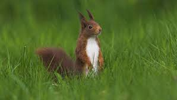
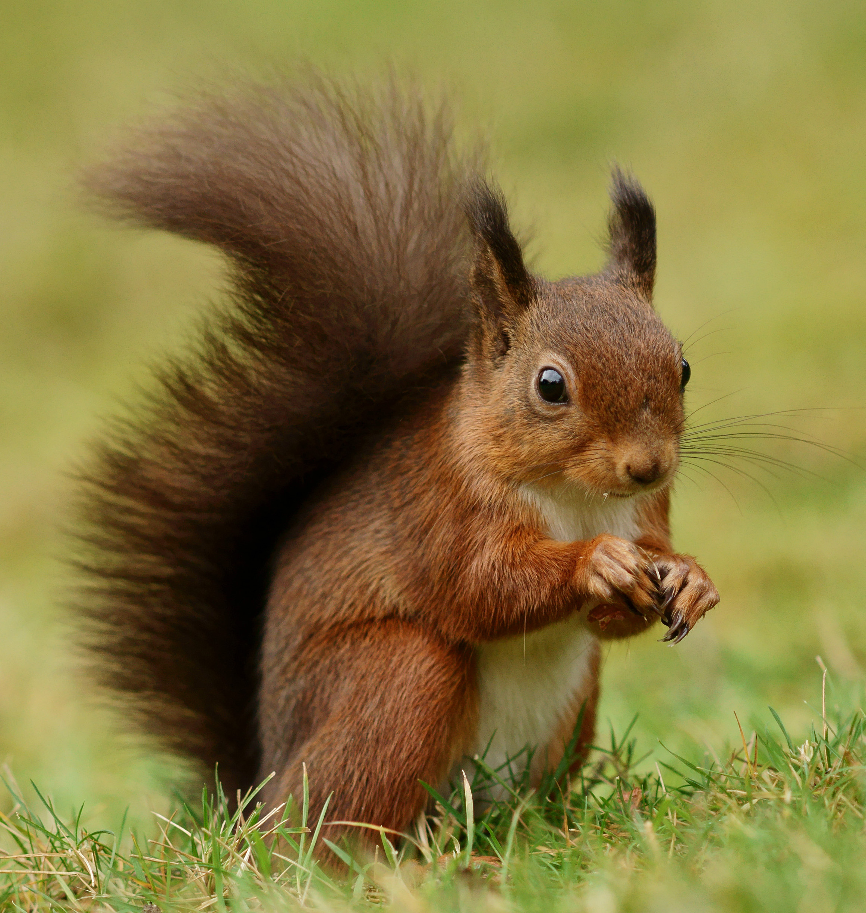

|

|

|

|
la grande vie des écureils
Les caractéristiques générales des écureuils sont celles des rongeurs de la famille des Sciuridés, ou des Anomaluridés pour certains écureuils volants, avec des nuances pour chaque espèce : voir les articles détaillés pour plus d'informations sur leur comportement ou leur physiologie respective.
Il y a 58 genres et 285 espèces2 dont 56 % sont arboricoles, 12,5 % sont terrestres et 31,5 % volantes. Ils ne sont absents que d'îles et de certains archipels, de l'Australie, de l'Antarctique et de la pointe sud de l'Amérique, ainsi que d'une zone concernant l'Est de l'Afrique du Nord et une partie du Moyen-Orient3.
Leur taille varie de 13 cm pour les écureuils pygmées d'Afrique à 90 cm pour les écureuils géants d'Asie.
Les écureuils vont généralement avoir une à deux portées dans l'année. Le nombre de petits issus de ces portées dépendra de l'espèce. Bien que les petits voient le jour sans fourrure, aveugles et sans dents, ils grandissent vite pour arriver à l'aspect que nous connaissons.